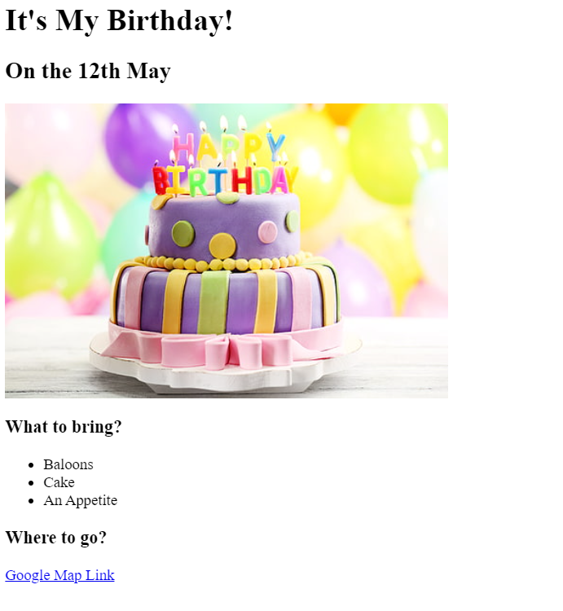

Vasanth's Portfolio Project
Hi! I am Vasanthkumar, a Fullstack Web Developer! And, below is a an ordered-list of my other projects:
List of my Favorite instruments
Preview:
Birthday Invite
Preview:

About me
Contact me